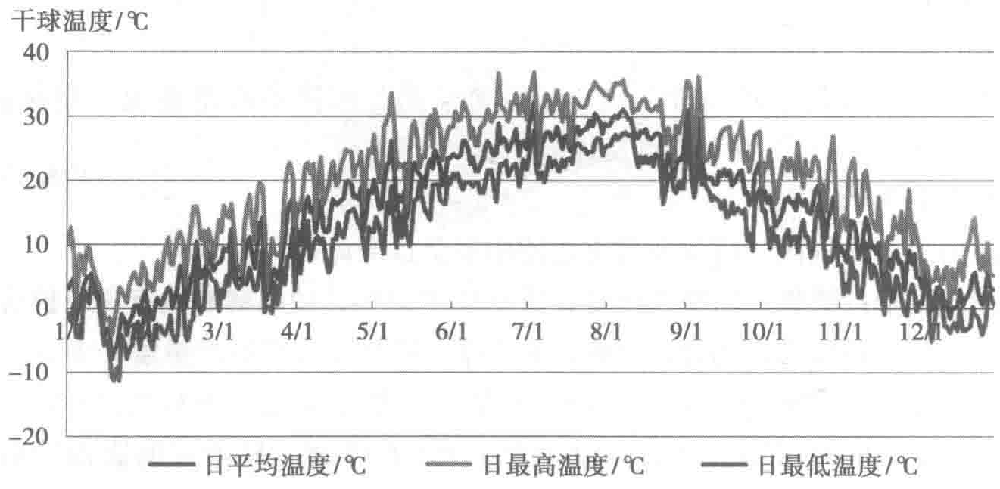

放电截止电压低于设定值等紧急状态下，可通过UPS主机发出控制信号，主动分断（脱扣）蓄电池开关，保护UPS及蓄电池系统。
（5）非晶合金变压器
本项目采用的是10/0.4kV SCBH15-2500kV·A干式非晶合金变压器。这种变压器既有普通干式变压器阻燃自熄、防潮、耐裂的优良性能，又具有非常优异的导磁性能，去磁与被磁化过程极易完成，有利于降低损耗，增加有效载荷提高效率，与SCB10系列普通干式变压器技术参数相比较，其空载损耗下降65%～70%，节能效果非常显著。
（6）终端PDU插排
本项目采用智能型PDU插排，所有PDU均竖向安装，不占用机柜可利用空间。其孔位插座簧片具有良好的导电性能和机械弹性，良好的耐疲劳、耐磨损、耐腐蚀性能；单个插头从插座拔出所需最小力≥30N，可有效防止插头在正常使用时自动脱落或因轻微碰撞而导致接触不良的情况。插座选用模块化标准件并配置防脱扣装置，方便拆装更换模块。PDU插排具备电子式电流、电压检测装置，可实时显示数值。
10.2.2 空调制冷系统
1. 气候环境
从建筑热工角度讲，宿迁市处于我国寒冷地区与夏热冬冷地区的分区交界处，严格来说仍属于寒冷地区。
当地气候适中，水资源丰富，属于暖温带季风气候区，年均气温14.2℃，四季分明，初霜期一般在10月下旬。相对于严寒地区，室外设备发生冻结故障的可能性较小；相对于夏热冬暖地区及更热地区，可利用的室外自然冷源又比较充足，属于较适宜的数据中心建设气候区域。
根据收集到的宿迁市典型气象参数进行分析，由图10-24可以看出，在宿迁市典型气象年中，最高气温为37℃，最低为-10℃，属于各种空调制冷设备可以正常工作的温度区间。
